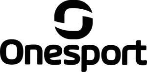

Trade Mark Journal No.2025/036 5 September 2025
UK00004248473 13 August 2025 (25,28)

- Class 25
- Clothing for sportswear; articles of clothing for sportswear; articles of athletic clothing; articles of clothing for playing the game of football; articles of clothing for use in outdoor pursuits; headwear [clothing] for sporting activities; weather resistant outer clothing.
- Class 28
- Gloves made specifically for use in playing sports; gloves made specifically for football goal-keepers; gloves made specifically for hockey, ice-hockey and lacrosse goal-keepers; gloves made specifically for ice-hockey players; golf gloves; batting gloves for cricketers; protective padded gloves for use by wicket-keepers in playing cricket; gloves made specifically for rugby players; sports holdalls shaped to contain specific apparatus used in playing sports [other than clothing]; bags specially adapted for sports equipment.
Onesport (UK) Limited
Representative: Stobbs